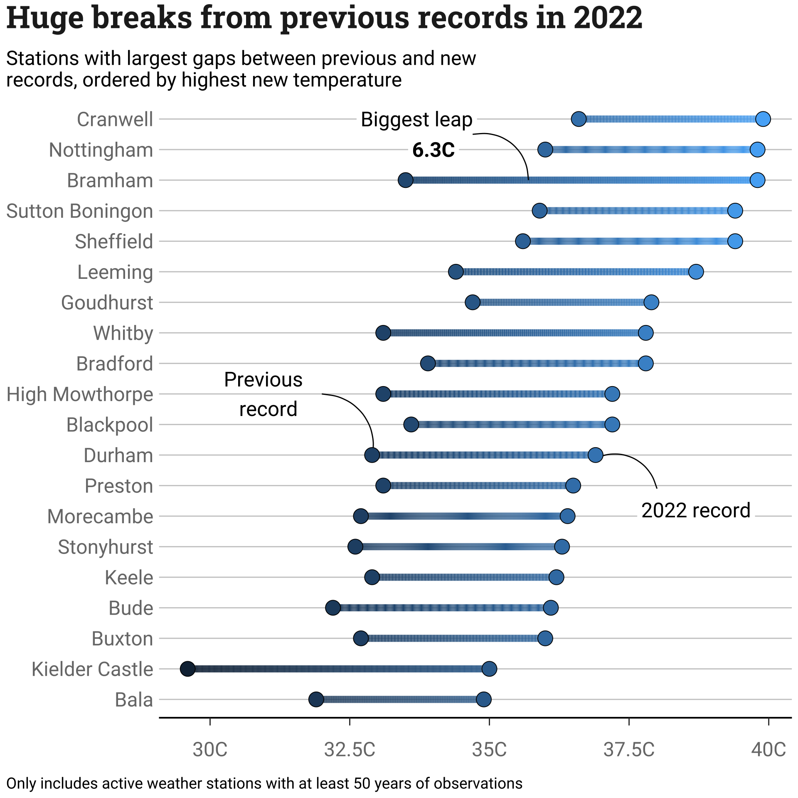

Code
# Load packages ----
library(bbplot)
library(tidyverse)
library(showtext)
# Import fonts ----
font_add_google(name = "Roboto Slab", family = "roboto-slab")
font_add_google(name = "Roboto", family = "roboto")
showtext_auto()
title_font <- "roboto-slab"
font <- "roboto"
# Input data (estimated values from article) ---
temperatures <- tibble::tribble(
~location, ~max_prev, ~max_2022,
"Cranwell", 36.6, 39.9,
"Nottingham", 36.0, 39.8,
"Bramham", 33.5, 39.8,
"Sutton Boningon", 35.9, 39.4,
"Sheffield", 35.6, 39.4,
"Leeming", 34.4, 38.7,
"Goudhurst", 34.7, 37.9,
"Whitby", 33.1, 37.8,
"Bradford", 33.9, 37.8,
"High Mowthorpe", 33.1, 37.2,
"Blackpool", 33.6, 37.2,
"Durham", 32.9, 36.9,
"Preston", 33.1, 36.5,
"Morecambe", 32.7, 36.4,
"Stonyhurst", 32.6, 36.3,
"Keele", 32.9, 36.2,
"Bude", 32.2, 36.1,
"Buxton", 32.7, 36.0,
"Kielder Castle", 29.6, 35.0,
"Bala", 31.9, 34.9
)
# Data preparation ----
## For the points ----
temperatures <- temperatures |>
dplyr::mutate(max_ever = pmax(max_2022, max_prev))
temperatures$location <- forcats::fct_reorder(as.factor(temperatures$location), .x = temperatures$max_ever)
temp_long <- tidyr::pivot_longer(temperatures, cols = c(max_2022, max_prev), names_to = "year",values_to = "temperature")
## For the bars ----
n_interp <- 501
temp_interpolated <- tibble(rep(NA, n_interp*20))
temp_interpolated[[1]] <- rep(temperatures$location, each = n_interp)
temp_interpolated[[2]] <- rep(NA_real_, n_interp*20)
names(temp_interpolated) <- c("location", "interp_value")
for (i in 1:20) {
temp_interpolated$interp_value[(1 + n_interp * (i - 1)):(n_interp*i)] <-
seq(temperatures$max_prev[i], temperatures$max_2022[i], length.out = n_interp)
}
str_wrap_break <- function(x, break_limit) {
# Function from {usefunc} by N Rennie (https://github.com/nrennie/usefunc)
sapply(strwrap(x, break_limit, simplify = FALSE), paste, collapse = "\n")
}
title_string <- "Huge breaks from previous records in 2022"
subtitle_string <- str_wrap_break("Stations with largest gaps between previous and new records, ordered by highest new temperature",60)
caption_string <- "Only includes active weather stations with at least 50 years of observations"
p <- ggplot() +
geom_line(data = temp_interpolated, aes(x = interp_value, y = location, color = interp_value), lwd = 3) +
#
geom_label(aes(label = "2022 record", x = 38.7, y = 7.2), family = font, size = 6.5, label.size = NA) +
geom_curve(aes(x = 38, y = 7.9, xend = 36.9, yend = 8.9)) +
#
geom_text(aes(label = "Previous \n record", x = 31, y = 11), family = font, size = 6.5) +
geom_curve(aes(xend = 32, yend = 11, x = 32.9, y = 8.9)) +
#
geom_label(aes(label = "Biggest leap", x = 33.7, y = 20), family = font, size = 6.5, label.size = NA) +
geom_label(aes(label = "6.3C", x = 34.0, y = 19), family = font, fontface="bold", size = 6.5, label.size = NA) +
geom_curve(aes(xend = 34.7, yend = 19.5, x = 35.7, y = 18)) +
#
geom_point(data = temp_long, aes(x = temperature, y = location, fill = temperature), shape = 21, color = "black", size = 6) +
#
scale_x_continuous(breaks = seq(30, 40, by = 2.5),labels = paste0(seq(30, 40, by = 2.5),"C")) +
#
labs(title = title_string,
subtitle = subtitle_string,
caption = caption_string) +
#
theme(plot.title = element_text(family=title_font,
size=28,
face="bold",
color="#222222"),
plot.subtitle = element_text(family=font,
size=18,
margin=ggplot2::margin(9,0,9,0)),
plot.caption = element_text(family = font, size = 14,hjust = 0),
plot.title.position = 'plot',
plot.caption.position = 'plot',
axis.title = ggplot2::element_blank(),
axis.text = ggplot2::element_text(family=font,
size=18,
color="grey47"),
legend.position = "none",
title = element_text(),
axis.line.x = element_line(size = 0.7, linetype = "solid"),
axis.ticks.y = element_blank(),
axis.ticks.length.x = unit(7, units = "points" ),
axis.text.x = element_text(margin=margin(t = 15, b = 10)),
panel.grid.minor = ggplot2::element_blank(),
panel.grid.major.y = ggplot2::element_line(color="#cbcbcb"),
panel.grid.major.x = ggplot2::element_blank(),
panel.background = ggplot2::element_blank(),
)
p